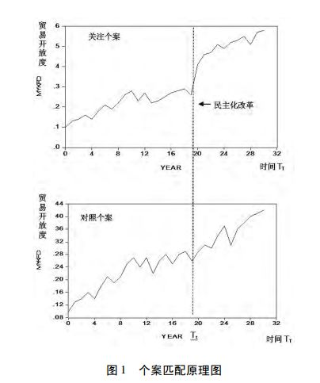
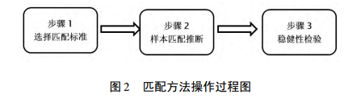
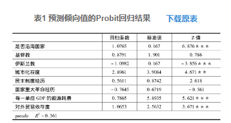
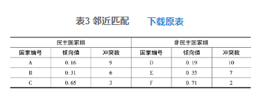
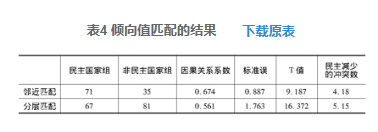
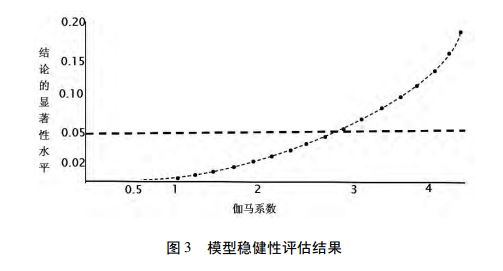

收录于合集
简
蒋建忠
南京政治学院马克思主义理论系政治学教研室讲师
- 本文是国家社科基金后期资助项目“国际关系实证研究方法”( 编号: 16FGJ001) 的阶段性成果。
摘要
社会科学研究的主要任务是从纷繁复杂的现象中发现事物之间普遍性的因果关联，“反事实”框架是揭示因果关系的主要路径。 匹配方法是依据 “ 反事实 ” 原理发展出来的新的因果推论方法， 它已经在教育学、社会学等学科中得到较为普遍的应用。 匹配方法在具体运用过程中形成个案匹配 、 倾向值匹配和纵贯 匹配三项主要分析方法 。 从国际关系学科研究目的、数据特征、科学化演进的角度来看，匹配方法非常契合国际关系研究。 匹配方法的实际操作过程可以分为匹配标准 选择 、 匹配推论和稳健性检验三个部分， 不同的匹配方法都包含若干特有的步骤和技巧。匹配方法有效地模仿自然科学的随机实验，比较好地达到了控制混淆变量、提升因果推论精确度的目的，拓展了国际关系定量研究方法。 当然，匹配方法也存在局限 性，它与传统研究方法是互相补充而不是取代的关系 。
关键词
因果推论； “反事实” 个案匹配；倾向值匹配；纵贯匹配
在过去的十几年，社会科学领域一个重要的方法论突破在于开始关注如何通过严格的统计技术实现有效的因果推论。匹配方法已被证明是在观测性数据中进行因果推论较为新颖且具创造性的一类统计方法，目前已发展出 个案匹配 、 倾向值匹配 和 纵贯匹配 等三种主要方法。匹配方法比较好地满足了 因果推论的理论基础 ———“ 反事实 ” 框架 。
**
一 、匹配的理论基础———“反事实”原理与评析
**
( 一) 因果推论的 “反事实”原理
“反事实”框架是大卫·刘易斯等人提出的推断因果关系的标准。 事实是指在 某个特定变量( A ) 的影响下可观测到的某种状态或结果( B ) 。 “ 反事实 ” 是指在该特 定变量( A ) 取负向值时可观测到的状态或结果( B’ ) 。 条件变量对于结果变量的因 果性就是 A 成立时 B 的状态与 A 取负向值时 B 的 “ 反事实 ” 状态( B’ ) 之间的差异 。 B 与 B’ 之间的差异可认为是由条件变量 A 导致的 。 如果这种差异存在且在统计上 是显著的，则说明条件变量对结果变量有显性效应，存在因果关系 。 举例来说，为了考察单极还是两极格局有利于国际社会的稳定，一个理想的研究设计是建立一个单极的国际社会并在接下来的时间内定期衡量国际社会的稳定性。与此同时，在同一国际社会的同一个时期再选择两极体系，也用同样的方法在同期内衡量它的稳定性通过单极格局稳定性与两极格局稳定性的差异对比来判断体系选择与国际社会稳定之间的因果关系。当然，这类研究设计在现实中是无法实现的，但蕴含的逻辑即为“反事实”原理。
对于社会科学研究来说，“反事实”因果推论框架的优势主要体现在哪里?由于在“反事实”推论中，研究者关注的是同样的个体在某一因素取值不同情况下的反应情况，实际上屏蔽了很多外在的混淆因素，从而确定研究者观测到的效果只能归因于关注的条件变量，而不可能归因于其他的混淆变量，这比较好地解决了社会科学因果推论中存在的遗漏变量、推论偏差等问题。
( 二) “反事实”因果推论的两种实践路径
“反事实”框架从抽象的哲学层面说明了因果推论的基本遵循。在 20 世纪 30年代，占统治地位的“反事实”因果推论方法是控制法: 要证明因果关系，研究者必须精确地控制实验对象的一切，让实验组与对照组在除关注的变量外尽可能匹配和相像，这样研究者才能把观察到的结果差异归因于关注变量 。显然，要达到控制一切混淆变量的目的，在现实中是不可能的。即使研究者能部分地控制，由此付出的成本也使得难以操作。20世纪50 年代，菲希尔( Ｒonald Fish-er) 提出与其控制一切，不如什么都不控制，即采用 纯随机实验 的方法来实现“反事实”因果推论。研究者把研究对象设定为两个组，把实验对象随机分入两个组中，其中一组施加刺激，另一组不施加刺激， 施加的刺激 可以看作是考察的 条件变量 。然后把两个组进行比较，它们之间的 结果差异 可以归功于 这种刺激 。这样，在实验组与对照组之间就形成了 事实 与 “ 反事实 ” ，它们之间的差异就是因果效应。为什么随机实验能够满足“反事实”框架的要求? 其本质在于实验中的被试对象是 随机地被分 到实验组和对照组 ， 其他可能的混淆变量在随机化的过程中都被均等地分到两组中 ， 保证了实验组和对照组在关注的条件变量之外的混淆变量上取值是相同或近似的 。 此时实验组和对照组在结果上的差异就只能用刺激和随机误差这个因素来解释 。 当样本大到可以保证统计检定力时，随机误差的可能性大大降低。由此可见，随机实验通过随机化过程对研究对象具有比较明确的控制力，它能有效地建立事实与“反事实”进行两者的匹配和对照，进而按照“反事实”框架进行因果推论，这是帮助研究者建立“反事实”框架的理想模式。
( 三) 社会科学 “反事实”推论的困境
在以观测性数据为主的社会科学领域，纯随机实验是难以做到的，主要由于以下三个方面的原因:
首先，从逻辑来看，历史的不可回溯性导致“反事实”的不可观测性。根据“反事实”原理，研究者需要在 同一时刻 观察 同一对象 在 条件变量取不同数值作用下 的反应结果。只有通过对同一对象的事实与“反事实”的对比，研究者才能进行因果推论。对于上述国际格局对国际社会稳定影响这一实例，严谨的因果推论过程应当是这样的: 国际社会形成单极格局，国际社会稳定性维持在较高水平，这是研究者能够观察到的事实。此时的“反事实”应当是同样的国际社会如果当时没有形成单极格局而是形成两极格局的稳定性情况， 这意味着无论是事实还是 “ 反事实 ” ，都需要发生在同样的研究对象身上 。显然， 事实和 “ 反事实 ” 是不可能同时观察得到的，这一悖论被胡兰( Paul W ． ****Holland ) 称为 “ 因果推论中的基本问题 ” 。
其次，从伦理道德来看，在社会科学研究中将需要接受刺激的对象安排到没有任何刺激的控制组是违背伦理道德的。因此，与自然科学相比，社会科学难以进行样本的随机分配。
再次，从学科特征来看，社会科学的研究数据主要来源于 调查 和 观测 ，难以实施随机控制。其实，由于在社会科学的调查和观测中，研究者没有严格的控制组， 如何找到一个各方面与实验组 相似的比较组，然后计算两种结果之差，便成为因果推断的瓶颈 。20 世纪 70 年代，以鲁宾( Donald Ｒubin) 、罗森鲍姆( Paul Ｒosenbaum) 和赫克曼( James Heckman) 为代表的统计学家提出了以 倾向值匹配 为特征的因果分析方法。该方法比较好地实现了在观测性数据中构建类似于随机试验中的实验组和对照组。随后，阿巴迪( Alberto Abadie) 等人提出了 控制个案构建技术 ，埃里森( Paul D． Alli-son) 阐述了使用研究个案自身构建事实与“反事实”的原理和路径，从而使匹配方法在社会科学因果推断中得到了快速发展。
二 、匹配分析的主要技术
匹配是多种不同因果推论技术与分析工具的集合，核心是构造类似于随机实验 中的实验组和对照组，进而进行因果推断 。 近10年来，通过罗森鲍姆、鲁宾和阿巴迪等人的不断改进和完善，匹配逐渐分化出 个案匹配 、 倾向值匹配 、 纵贯匹配 等主要分析方法，其中倾向值匹配应用最为广泛。
( 一) 个案匹配
社会科学研究要实现严密的因果推论 需要构建与被观测到个案相对应的 “ 反事 实 ” 个案 。 显然，在社会现实和历史中几乎没有现存的 “ 反事实 ” 案例，而是需要通过 综合很多没有经历过条件变量影响的个案，由此构造对照个案 。 对照个案构造的基本设想是通过 某种加权方式 将诸多 没有受到条件变量影响的个案进行综合 ，使得在 条件变量作用之前对照个案与研究者关注的个案具有相同或相似的历时性趋势 。该 对照个案 可以近似地看作 关注个案的 “ 反事实 ” 案例 ， 原因在于影响关注个案和对照个案发展趋势的混淆变量有许多，当两者的历时性趋势一致时，意味着影响两者发展趋势的混淆变量在平均值上是一致的 。当条件变量作用于关注个案时，考察研究者关注的个案与对照个案之间的变化趋势， 如果两者存在显著性的差异 ， 它只可能是条件变量作用产生的 ， 从而推断条件变量与结果变量之间的因果关系 。
这里以民主化改革对贸易开放度的影响为例进行说明。首先，选择A国作为事实，假设该国在Tt时刻实行了民主化改革，罗列出包含Tt时刻的［T0，Tt］时间段内该国的贸易开放度，从而形成贸易开放度变化示意图。②其次，选择N个国家组成个案池，这些国家的特点是没有经历过民主化改革。按照“反事实”原则，个案池中的任意单个国家都不能成为A国的“反事实”。再次，选择适当的权重，对个案池中的所有案例进行加权处理，构造出对照个案，使得对照个案与关注个案( A 国) 的历时性趋势是一致的，即在［T0，Tt］时间段中，A国贸易开放度曲线与对照个案的贸易开放度曲线尽可能一致。那么，该对照个案可以作为A国的“反事实”，其原因就在于选择的权重使得影响A个案和对照个案的混淆变量都均等化了。最后，比较Tt时刻A国经历民主化改革后的贸易开放度和对照个案的贸易开放度，如果两者之间有显著的差异，说明民主化改革的确对贸易开放度有影响。上述分析思路可以用图1表示。
在图1中，通过对个案池中N个个案进行加权处理形成对照个案，使得在Tt时刻前对照个案与关注个案的趋势基本相同。在Tt时刻，A 国( 即关注个案) 实行了民主化改革，对照个案没有实行民主化改革，观察 Tt后A国与对照个案贸易开放度发展趋势，如果两者有显著的差别，显然，这种差别只可能是民主化改革造成的，从而挖掘出民主化改革与贸易开放度之间的因果关系。
利用个案匹配方法进行因果推理的关键在于如何通过适当的加权方式将N个没有受到条件变量影响的个案综合起来形成对照个案，使之成为“反事实”。权重构造的基本设想是: 设个案池中每个个案受到的权重影响为: βT = ( b1，b2，…bN ) ③，在

［T0，Tt］时间段内选择n个时间点，假设在每个时间点上关注个案对应的贸易开放度是F0 =［F0，F1，…，Fi，…，Ft］。个案池中任意个案在每个时间点上对应的贸易开放度数值可表示为如下的矩阵形式:
其中，［F0j，F1j，…Fji，…，Fjt］代表个案池中第j个个案在各个时间点上的贸易开放度数值。所求解的权重β是使关注个案的贸易开放度与构造的对照个案的贸易开放度的差最小，可表示为矩阵形式: min( βT F-F0 ) 2 。上式的最优解就是符合要求的权重β。
( 二) 倾向值匹配
通过倾向值匹配方法控制混淆变量进而消除遗漏变量是社会科学大样本研究可使用的一种新兴统计工具。倾向值作为因果推论的概念最早出现于1983年罗森鲍姆和鲁宾合写的一篇名为《倾向值对于观测性研究中因果效果的中心作用》的论文，倾向值是指 被研究的个 体受到所有变量影响情况下的发生概率 。 倾向值匹配方法 主要是针对具有 相同或 相似倾向值 的 两个或多个案例 ，考察受到 条件变量作用 和 没有受到条件变量作用 情况下案例的结果。 如果结果的差异是显著的，那么这种差异只能归因于条件变量，而不是其他的混淆变量，从而在条件变量与结果变量之间建立因果关系 。由此可见，倾向值匹配方法十分巧妙地完成了对混淆变量的控制。
为什么倾向值匹配方法能够进行有效的因果推论呢? 原因在于它符合“反事实”逻辑推理框架，判断两个案例能否进行事实与“反事实”匹配的标准就是倾向值。举例来说，考察宗教信仰对选举投票的影响，通过统计数据发现基督教徒倾向于民主党，不信仰基督教的人员倾向于投共和党的票，那么是否可以断定信仰与投票倾向之间有因果关系呢? 显然，作出上述判断的逻辑推理是不严密的，原因在于其他潜在的混淆变量会影响投票倾向。倾向值匹配方法按照信仰差异把所有的样本分成两组，分别在不同组中选择具有相同或近似“信仰基督教概率”( 即倾向值) 的案例形成案例匹配对。②由于匹配对中的案例具有相同的倾向值，这意味着性别、年龄、工作性质等混淆变量对案例的平均影响都是相同的。因此，匹配对中的案例a( 信仰基督教)和案例b( 不信仰基督教) 就形成事实和“反事实”，投票倾向差异的原因只可能是宗教信仰，从而在宗教信仰与投票倾向之间建立因果关系。 由此可见，倾向值就像一道阀门，在倾向值匹配之后，除研究者关注的条件变量外，其他可能的混淆变量对同一 匹配对内案例的影响是相同或相似的 。 因此，匹配对中案例间结果的差异只可能是由关注的条件变量所导致，从而完成变量间的因果推论。
( 三) 纵贯匹配
纵贯匹配的基本原理是利用研究个体作为其自身的控制因素，在不同的时点上 测量同一个个体，从而得到在关注的自变量取值不同时个体的表现情况 。 不同时点的个体便形成事实与“反事实”匹配，进而依据“反事实”原理进行因果推论。例如，想了解执政党的变化是否影响一个国家的军控政策，可以通过对美国民主党和非民
主党执政时军控政策的差异进行比较判断。 前后两个时期美国军控政策便形成事实和 “ 反事实 ” ，两者的差异可以作为执政党变化效果的估计 。 如果我们将美国历史上不同时期军控政策的差异进行平均，就能得到 “ 平均处置效应 ” 的估计值 。 这一估计控制了民主制度、国际体系、文化因素以及其他更难以控制的变量，如地理因素、民族特性。虽然它不能控制诸如GDP、对外贸易额之类的时变变量，但这些变量通过常规方法对其进行测量并放入回归模型中就可以得到控制。
使用纵贯方式进行匹配时有两个基本要求: 第一，对于每一个研究对象，因变量至少要求被测两次，两次测量值之间应当存在差异 。 第二，依据匹配的原则，研究对象所关注的自变量在不同时点上的取值应是相反的 。 因此，纵贯匹配在估计诸如性 别 、 民族之类的非时变变量的效果上几乎毫无用处 。
三 、匹配方法在国际关系研究领域的应用
国际关系研究具有社会科学的特征, 但并不是任何社会科学方法都可以移植于国际关系研究领域。当前, 在国际关系学界, 利用匹配方法进行因果推论的研究还处在起步之中。国际关系研究的目的、数据特征以及科学化进程决定了匹配方法具有广阔的发展空间。
( 一) 匹配方法可以有效弥补国际关系因果推论的方法缺陷
戴维·辛格认为，国际关系研究主要有三个层次: 一是 系统地了解国际政治现象的状况及发展过程 ; 二是说明国际政治现象发生的原因，揭示 各种现象之间的相关关系 或 因果关系 ; 三是 在描述和解释的基础上，进一步推测国际政治的发展趋势 。在这三个层次中，揭示 国际政治现象之间的因果关系 是国际关系研究的核心任务。通过挖掘现象或变量之间关系实现因果推论，我们就可以回答国际政治现象“为什么”发生的问题，并在此基础上进行预测，为政策制定提供指导方案。
直至今日，国际关系研究主要是通过定性中的比较案例分析和定量中的大样本统计建构不同变量之间的关系来验证其对于因果关系的判断。比较案例分析是国际关系研究在观测性数据条件下依据近似“反事实”原理进行的因果推论，其根本缺陷在于研究者不能够 控制被研究对象对于条件变量特定水平的接受或拒绝而产生遗漏变量偏差 ， 进而难以判断发现的因果效应是确定的，还是由于某个( 些) 被忽略的变量所导致的 。具体来说，它主要包含以下两个缺陷: 一是变量选择误差 。根据“反事实”原理，进行因果推论时 首先要求研究者预测并识别所有可能的条件变量 ， 然后选择那些在除关键条件变量外的其他变量上取值相同的案例来控制它们的影响 。显然， 要识别所有的条件变量并达到研究对象的同质性是非常困难的，它较多依赖于研究者对经验世界的判断 。罗伯特·基欧汉等人甚至明确指出，案例研究不能解决遗漏变量问题，最多可以估计出偏差的方向，通过了解高估还是低估真实因果效用，才能判断已有结论是被强化还是弱化了。二是案例选择误差。 比较案例分析往往选择恰好能证明因果关系的案例，对那些反面案例视而不见，这就没有保证每个案例被选中的概率是相等的 。 在那些未被关注的案例中， 混淆变量可能对结果产生决定性的影响 。齐夫·毛兹在批评案例研究方法时指出，案例研究在很多情况下成为怎么都行的随意研究的代名词，作者感到自己无需阐明如何进行研究，为何选择一个特定案例或一组案例，使用和省略了哪些案例数据，如何处理和分析数据，以及推论是如何从作者呈现的故事中产生的。国际关系学界也普遍认为，在比较案例分析中，案例的选择是在“无知之幕”下进行的，选择的标准并不明确，选择过程也常常缺乏研究者评估潜在偏差的自觉努力，各种选择偏差被带入案例选择过程的机会因而大大增加。
大样本统计是当前国际关系研究进行因果推论的主流模式。研究者既可以利用部分相关来控制某些被忽略变量的影响，也可以通过对许多案例的随机性考察来减少其他被忽略变量的影响。但是，在因果推论中采用大样本统计也存在两个不可避免的缺陷: 一是从元认识来看，当用诸如多元回归模型建立变量之间的关系时，这种关系是否就代表了一种因果关系呢? 对于这个问题，答案是否定的。在数理统计技术日臻完善的情况下，任何两个变量间都可展示出较高的协同性和相关性，并能通过相应的参数检验。大样本统计的上述特性在国际关系研究中形成一种统计至上的病态，造成研究者随意凑合变量间的共变关系，盲目地认为凭统计公式就能清楚解释该项因果关系。事实上，统计方法很难解决变量间的因果关系问题，即使应用格兰杰因果检验方法，也只是统计上的因果，要证明变量间的因果关系，需要有逻辑上的论证。二是从具体操作实践来看，进行大样本统计时要求从总体中随机抽取大量样本，将每个案例视为“同质单元”，案例被分解为 变量 、 分布 和 关联性 ，研究的焦点在于对 尽可能多的观察单元进行分析 。在获得样本时，要保证抽样的随机性，从而确保样本的性质能代表总体的性质，这一要求是通过参数检验来实现的。事实上，只有调查性数据可以满足上述要求。绝大多数国际关系研究是从已有的历史资料中得到的观测性数据，受制于可获得性、数量限制等因素，抽取的样本往往不具备随机性。特别是国际关系研究中一些相对较少的现象( 如世界性战争) ，甚至都达不到满足统计分析的样本数量要求。由此可见，比较案例分析和大样本统计并不能控制所有的混淆变量，它只能挖掘 已知的或可能产生影响的关键变量 。尽管近年来发展起来的基于模糊值和多值集的质性比较分析方法可以考察多个因素和组合对结果的影响，但也只能分析无限多个条件变量中的有限变量，仍不能消除遗漏变量问题，从而导致因果推论带有或然性。
( 二) 匹配方法高度契合国际关系研究观测性数据的特征 。
一般来讲，社会科学分为 实验性研究 和 观测性研究 两种类型，分别对应着三种数据形式: 实验性数据 、 调查性数据 和 观测性数据 。数据不同，因果推论的方法也不同。依据“反事实”原理，实验性数据中研究者对研究对象具有比较明确的控制力，可以进行随机化处理，是帮助研究者建立“反事实”框架的有效模式。但不幸的是，有别于自然科学，由于实际操作困难和伦理障碍的存在，国际关系研究几乎无法获得实验性数据。特别是在国际关系研究中，作为实验对象的国家、组织往往由于其主观能动性和个体差异而使实验中的随机分配、控制和干预变得几乎不可能。
调查性数据需要从 总体 中抽取 样本 ，通过对 样本 性质考察来推断 总体 性质， 随机抽样 是获取 调查性数据的基石 。但是，国际关系研究中 定量方法 所抽取的样本往往来自 历史资料 。由于历史资料的有限性，往往无法满足大样本统计对总体数据苛刻的假定要求。同时， 抽样的非随机性也决定了研究者难以获得具有代表性的样本 。更关键的是，利用 调查性数据 常规意义上的大样本分析得到的回归系数代表的是 相 关关系 ，而非 因果关系 。我们不能简单地将统计模型与因果关系等同起来。在国际关系研究中，许多学者将方差分析、线性回归模型中得到的系数进行某种因果性的解读。事实上，由 回归模型得到的系数是一种条件概率，是在控制其他条件变量之后特定条件变量对结果变量影响的均值 。 这种条件概率依旧是在分析变量间的相关性而 非因果性 。
国际关系研究主要是从 历史 、 档案以及现实发生的事件中获取数据和资料，它们属于观测性数据的范畴 。 观测性数据 的典型特点是无法像实验性研究那样 对被研究个案 具有比较 明确的控制力 ，研究者往往不可能分配和控制被研究个案对于关注变量特定水平的接受和拒绝，从而完全控制住作用于实验组和对照组的混淆变量。
匹配方法十分巧妙地完成了对混淆变量的控制。下面从一个混淆变量的情况谈起: 考察民主与和平之间的关系，假定贸易这一变量混淆了民主与和平之间的关系。一个比较直观的控制贸易的办法是将贸易这一变量细分成不同层次以保证每一个层次中国家的贸易额近似。这时在各个层次内部观察、确定民主与和平之间的关系。如果存在两个混淆变量( 贸易和文化相似度) ，我们可以将这两个混淆变量交互分成4 个小组: 第一组为贸易额大且文化相似度高; 第二组为贸易额大且文化相似度低;第三组为贸易额小且文化相似度高; 第四组为贸易额小且文化相似度低。接着在每组内部考察民主与和平之间的关系，然后平均起来进行推断。可见，通过分层的方法可以在观测性数据中完成对混淆变量的控制。但是，随着混淆变量增加，这种细分法就变得不合理甚至不可能了。匹配方法比较好地解决了多个混淆变量情况下的控制问题: 它不再关注每一个混淆变量的具体取值，而是关注利用匹配标准( 如倾向值) ，使所有这些需要考虑的混淆变量在经过匹配标准的过滤后都均等化地分配到 事实组 和 “ 反事实 ” 组 。换句话说，无论有多少需要控制的混淆变量， 我们都能够通过匹配方法将它们控制住，从而帮助我们得到关注的自变量与因变量之间的关系 。由此可见，与随机实验方法类似， 匹配方法在观测性数据中构建类似于随机实验中的 实验组和对照组，进而实现因果推论 。
四 、操作程序与案例讨论
因果推论原理的掌握不应当仅仅停留在 统计 和 理论 层面，而应当应用于国际关系具体的问题研究，这就涉及 匹配方法 的具体实施过程。匹配方法具有其他定量研究方法不同的 基本原理 、 操作过程 和 分析路径 。具体而言，匹配方法主要有三个步骤: 选择匹配标准 、 根据匹配标准进行样本的匹配推断 、 稳健性检验 ( 参见图 2 ) 。考虑到匹配方法具有多种不同的分析技术，这里通过剖析应用最为广泛的倾向值匹配的操作过程，并且辅之以典型案例( 以考察民主与和平的关系为例) ，说明这一方法的基本原则、实施步骤、具体应用以及需要注意的事项。这里选择倾向值匹配来分析民主对于和平与冲突的影响，主要是出于以下两点考虑: ( 1) 在匹配方法的类型中，倾向值匹配是相对成熟且稳定的因果分析模式，它比其他方法更为流行。( 2) 民主和平论是争论较大的理论问题，认为民主国家之间不会发生或者很少发生战争。以往的研究主要是通过大样本的定量分析来发现民主制度与武力冲突之间的相关性或者共变性关系。但是，对两者间的因果关系并没有得到严格的定量验证，本文试图为其提供一条检验思路。

根据匹配分析程序结合倾向值的具体特征，倾向值匹配主要涉及三个关键性步骤: ( 1) 通过 Probit 或逻辑斯蒂( Logistic) 回归，利用自变量预测个体成为民主国家的概率，即倾向值得分; log( 成为民主国家的概率 /1-成为民主国家的概率) = βX + е，或Probit( 成为民主国家的概率) = βX + е
( 2) 根据估计的倾向值得分，利用不同的匹配规则来考察民主对和平的影响。首先，把所有案例按是否是民主国家分成两组; 其次，在民主国家组中抽取个体( 假设倾向值为 c) ，然后从非民主国家组中找到倾向值与 c 最为接近的那个个体与之匹配; 再次，通过上述方法依次对所有个体进行匹配，得到依据倾向值为标准划分的多个匹配对。根据具有相同或相似倾向值的匹配对来分析民主国家和非民主国家在冲突上的差异，如果这种差异是显著的，则可以说明民主对和平有影响。
( 3) 通过敏感性分析评估倾向值匹配过程的稳健性。下面根据上述步骤来分析民主与和平之间的因果关系。
( 一) 预测倾向值
为了验证民主对冲突的影响，需要计算一个国家实行民主的概率( 即倾向值) 。国家是否实行民主制度受到许多因素的影响。2007年，伊莱切斯对影响民主的各种因素进行了总结性考察，他将文献中出现的因素统一纳入多元回归模型，以检测各个因素对民主转型的不同作用。这些因素共分为5 个类别: 地理、文化与宗教、经济、社会条件与现代化程度、政治制度，共计17个变量。①将上述17 个变量放入回归模型，得出影响最为显著的五大类别变量: 是否沿海国家( 地理类别变量) 、基督教、伊斯兰教( 文化与宗教类别变量) 、城市化程度( 社会条件与现代化程度类别变量) 、民主制度经历、国家重大革命经历( 政治制度类别变量) 、每一单位GDP的能源耗费、对外贸易依存度( 经济类别变量) 。将民主作为因变量，上述变量作为自变量，采用1993年195个国家的数据进行Probit回归，从而获得预测某个国家成为民主国家概率的模型，具体结果如表1所示。

根据表1可知，是否沿海国家、伊斯兰教、城市化程度、每一单位GDP的能耗和对外贸易依存度都与国家是否实行民主制度的概率显著相关。从虚拟Ｒ2 ( pseudo Ｒ2= 0． 361) 可以看出，这些混淆变量加在一起对于国家是否实行民主制度具有比较强的解释作用。因此，可以利用表1中的系数来预测国家采用民主制度的概率。
( 二) 基于倾向值进行匹配
有了表1的Probit模型，我们可以预测每个国家的倾向值得分，这个数值是根据国家在各个变量上的取值并依据模型预测出来的。需要说明的是，虽然理论上每个国家都有倾向值得分，但是有些国家的倾向值得分太低( 即概率上不可能成为民主国家) ，有些国家的倾向值得分太高( 如有些国家的倾向值得分达到0． 99，几乎必定是民主国家) ，因此无法找到相匹配的国家。这些倾向值取值极端的国家在随后的分析中就没有再被考虑进去，这使得最后在分析民主对冲突影响中的国家数量要小于统计时的样本数量。在最后使用的样本中，我们能够保证民主国家至少可以找到一个非民主国家与之相匹配，由此产生的倾向值取值范围称为共同区间。在此区间中倾向值的统计信息如表2所示。
通过表2可以看出，尽管统计的样本量为195个，但最终所使用的个体数仅为165 个。在 165 个国家中，倾向值的平均得分为 0． 267，标准差为 0． 892。其中，倾向值得分最大值为0． 897，最小取值为0． 007。在这个共同区间内，对民主国家和非民主国家进行匹配，然后观察两者在冲突数量上是否存在差异，以此判断民主对和平的影响。一般来讲，在具体操作时涉及邻近匹配、半径匹配、核心匹配和分层匹配4种操作方法。下面以邻近匹配和分层匹配为例进行说明。
1 ． 邻近匹配。
在邻近匹配中，我们首先找到民主国家集合中某个国家的倾向值 a ，然后从非民 主国家集合中找到倾向值与 a 最为接近的那个国家与之匹配 。 现假定有6个国家的倾向值和冲突数，如表3所示：

表3中，A的倾向值是0． 16，在非民主国家中D的倾向值与它最接近，那么A与D就可以匹配起来。同理B与E、C与F也可以匹配起来。基于邻近匹配，我们只需要将不同匹配国家之间的冲突平均起来就能够计算出民主对冲突的影响。在表3中，民主对冲突的影响程度为［( 10 － 9) + ( 7 － 6) + ( 2 － 3) ］? 3 0． 33。从计算结果可以看出，除民主因素外，其他可能影响冲突结果的变量对两组国家的影响在总体上是相同的，那么两组国家最终在冲突上的差异只可能是由民主这一因素造成的。
2 ． 分层匹配。
分层匹配是将倾向值分成若干层次，在某个层次内，保证民主国家与非民主国家 的倾向值近似 。 这样就可以分别在每个层次内考察民主对冲突的影响，然后将不同层次的数值加权平均起来得到最终的影响效应。在表3中，假定将倾向值按照0． 1距离进行分层，那么表3中的不同倾向值层次为0． 1 ～ 0． 2、0． 3 ～ 0． 4、0． 6 ～ 0． 7、0． 7 ～ 0． 8。其中，在 0． 1 ～ 0． 2 层次匹配的国家为 A 和 D，在 0． 3 ～ 0． 4 层次匹配的国家为B和E，在0． 6 ～ 0． 7层次中只有国家C，在0． 7 ～ 0． 8层次中只有国家F，因此层次0． 6 ～ 0． 7、0． 7 ～ 0． 8被合并掉。针对0． 1 ～ 0． 2这一层次，民主国家与非民主国家的冲突差值为10 － 9 = 1，在0． 3 ～ 0． 4这一层次民主国家与非民主国家的冲突差值为7 － 6 = 1。综合这些差值，得到的民主对冲突的影响为［1 + 1］? 2 1。需要说明的是，利用邻近匹配和分层匹配计算得到的民主对冲突的影响程度往往是不同的，有时甚至有较大的差距。因此，倾向值匹配的未来技术方向是发展出更加合理有效的匹配模式，使得所有的数据都能纳入进来并获得稳定的因果推论结果。
根据上述两种匹配方式，利用1993年165个国家的数据我们能够得到民主对冲突影响的结果。其中，冲突的数据主要是奥斯陆国际和平研究所内战研究中心提供的1946年以来武装冲突数据。①该数据库不仅包括国际武装冲突和国内冲突，而且每年在《和平研究》上更新前一年的武装冲突数据。②具体的发现如表4所示。

通过表4可以发现，利用不同的匹配方法所使用的样本数量是不同的，如果采用邻近匹配，只有106个国家能够使用。采用分层匹配时，涉及的样本个案数是148。
此外采用不同的匹配方法，得到的民主与和平之间的因果关系系数也不尽相同，分别为0． 674和0． 561。需要说明的是，不同的匹配方法会产生不同的研究结论。近年来，一些新的匹配方法也在不断发展，如海森( Ben B． Hansen) 、格林( SamuelGreen) 发展的完全匹配方法，保证每个抽样案例都能在匹配过程中被使用到。塞克汗和米巴恩发展的遗传匹配技术，借助人工智能的方法，在匹配过程中甚至不需要计算具体的倾向值得分。因此，在实际研究中需要采用多种匹配方法进行交互验证，当不同的匹配方法得出的结果大致接近时，才能够确定研究的结论站得住脚。
( 三) 模型稳健性评估
利用逻辑斯蒂或 Probit 进行倾向值计算时，尽可能把考虑到的条件变量都纳入进去，但仍有可能存在遗漏的变量 。 ③ 敏感性检验是指，如果没有关注到的变量被我们考察到了，结论是否能够保持不变 。 如果原有的结论仍成立，那么我们便有证据认为结论是稳健的 。
在实际操作中，研究者无法通过纳入未考察的变量来进行敏感性检验，原因在于如果已知未考察的变量，则可以放入逻辑斯蒂或Probit模型中。因此，敏感性检验只能采用间接的方法: 希望能够知道一个没有被观测到的混淆变量需要多大程度的变动才能够动摇对倾向值的预测以及基于倾向值而进行的因果推断。根据回归统计方法，假设考虑两个案例i和j，它们的倾向值分别为pi和pj 。pi和pj的值可以依据已观测到的变量X和没有观测到的变量μ来预测。
p i = αXi + βμi
p j = αXj + βμj
由上述等式可知，即使个体i和j在已观测到变量X上的取值完全一样，它们的倾向值也会由于未观测到变量μ上取值的差异而不同。
根据罗森鲍姆研究，g可以作为统计量，通过该统计量可以判断在何种情况下，研究的结论会受到质疑。 因此，稳健性判断的基本设想是: 考察 g 值的大小 。 如果g等于1，则认为混淆变量对结论没有影响。如果g = 2，说明即使两个个体在已经考虑到的变量上取值完全相同，案例i的倾向值仍是j的两倍，这是由未被考察到的变量μ 决定的。 随着 ****g ****值的变大，未被考察到的遗漏变量 μ 变得越来越重要，结论的稳健 性就越差 。
事实上，如果真的有遗漏变量μ导致g值变得很大，该遗漏变量应当是显著的，在进行倾向值计算时就应纳入逻辑斯蒂或Probit模型。这意味着如果g值非常大，那么该混淆变量被遗漏就是一个小概率事件。因此，在进行敏感性检验时，核心是观察g值大到什么水平时结论就会变得不显著。如果g值接近于1时结论就不显著了，这说明已遗漏了重要的变量。如果g 值比较大( 如 g = 3) ，这意味着为使结论不显著，这个被遗漏的混淆变量需要使Pi值为Pj值的3倍，这样的混淆变量被遗漏显然是太“稀罕”了，据此可以断定根据原来模型计算的倾向值和因果推论是稳健的。在本例中，伽马系数和已有结论的显著度在图3中展示出来。其中，横虚线表示显著性水平为0． 05，只有当伽马系数在3左右的时候，结论的显著性才明显大于0． 05。根据上文的论述，为了使结论不显著，这个被忽视的变量需要强大到在这个变量上取值不同的两个国家中一个国家成为民主国家的概率是另一个国家的3倍，这样的混淆变量太少见了。因此，根据已有的混淆变量建构的模型以及估计的倾向值是稳健的。

五 、超越与限度
匹配方法本质上是实验法在国际关系研究中的应用， 通过事实( 实验组) 与 “ 反事实 ” ( 对照组) 的匹配达到因果推论的目的 。 与传统的比较案例分析和大样本统计相比，匹配方法具有两方面的优势: 一是因果推论的准确性。在比较案例分析中，需要人为设定影响结果的所有可能的条件变量，通过案例间的比较获得因果关系。大样本统计经常会出现多重共线性问题，从而“自动”删除某些混淆变量，从而导致遗漏变量偏差。 在估计倾向值的逻辑斯蒂或 Probit 回归中，因为关心的是逻辑斯蒂模 型的预测能力，共线性对于模型预测能力没有影响，因此可以把尽可能多的影响结果的条件变量纳入其中 。 在对照个案构建时， 通过复杂的权重设置，控制影响结果发生 的所有混淆变量 。 在纵贯匹配中，利用个案自身来控制潜在的或无法控制的混淆变量 。 因此， 依据匹配方法得到的因果关系在更大概率上减少了遗漏变量的可能性 。
二是因果推论的精确化。 比较案例分析通过多个案例的比较，推导条件变量与结果 变量之间的因果效应 ，而 大样本统计甚至只能推断出变量之间的相关关系 。匹配方法能定量地测算出因果效应: yIi － yNi 。由此可见，与比较案例分析和大样本统计相比，匹配方法更加符合“反事实”原理， 通过尽可能控制混淆变量，挖掘变量之间的 “ 净效应 ” ，在因果推论方面更为准确和精致 。因此，符合“反事实”框架的匹配方法不仅是因果推论技术，而且是进行因果探索必须坚持的理念，它为国际关系研究打开
了新的方法论天地。然而，世界上不存在完美无缺的方法，匹配方法仍然存在很大的发展限度。
第一，根据 “ 反事实 ” 的定义，定义 “ 反事实 ” 的关键在于改变条件变量的取值时，其他混淆因素必须保持不变 。 显然，研究者永远都无法确定是否已经穷尽并控制所有可能导致结果的变量。正如罗伯特·基欧汉指出的，不论研究设计有多么完美，收集到的数据有多么丰富，研究者的洞察力有多么敏锐，也无论研究助理如何勤奋，实验控制得多么精确，人们永远都无法获得一个完全确定的因果推论。
第二，匹配方法并不考虑条件变量之间的相互作用而只关注某个条件变量的因 果效应，因此无法实现国际政治现象的多变量分析和联合分析 。 个案匹配、倾向值匹配、纵贯匹配通过单个( 或多个) 案例构成事实与“反事实”的匹配来实现国际政治现象的单因解释。它在运用时包含如下的假设: 一种决定论的解释，而非概率论的解 释; 存在唯一的单因; 不存在相互影响的效果 。 1929年德国物理学家海森堡提出测不准原理后，传统的决定论观念被击得粉碎，取而代之的是世界的随机性特征。许多哲学家和方法论学者也开始对传统因果律进行反思。卡尔纳普批判了人们习惯的单因解释逻辑，明确指出不能挑选任何一个单个原因作为唯一原因，根本没有唯一原因这个东西。拉金也指出，国际政治之所以复杂并难以解释，不仅是因为有太多影响结果的变量，而且是因为不同的与原因相关的条件共同结合并以某一方式产生一个特定的结果。正是在这种背景下，国际关系研究开始出现单因解释向多因分析的转向。因此，匹配方法与传统研究方法是互相补充而不是取代的关系。
本文经国政学人（ID:guozhengxueren）微信公众平台编辑首发，有删节和改动，参考文献请见原文
来源：《国际关系研究》2017年第3期
筛选：晞哲 编辑：早安老师 晞哲